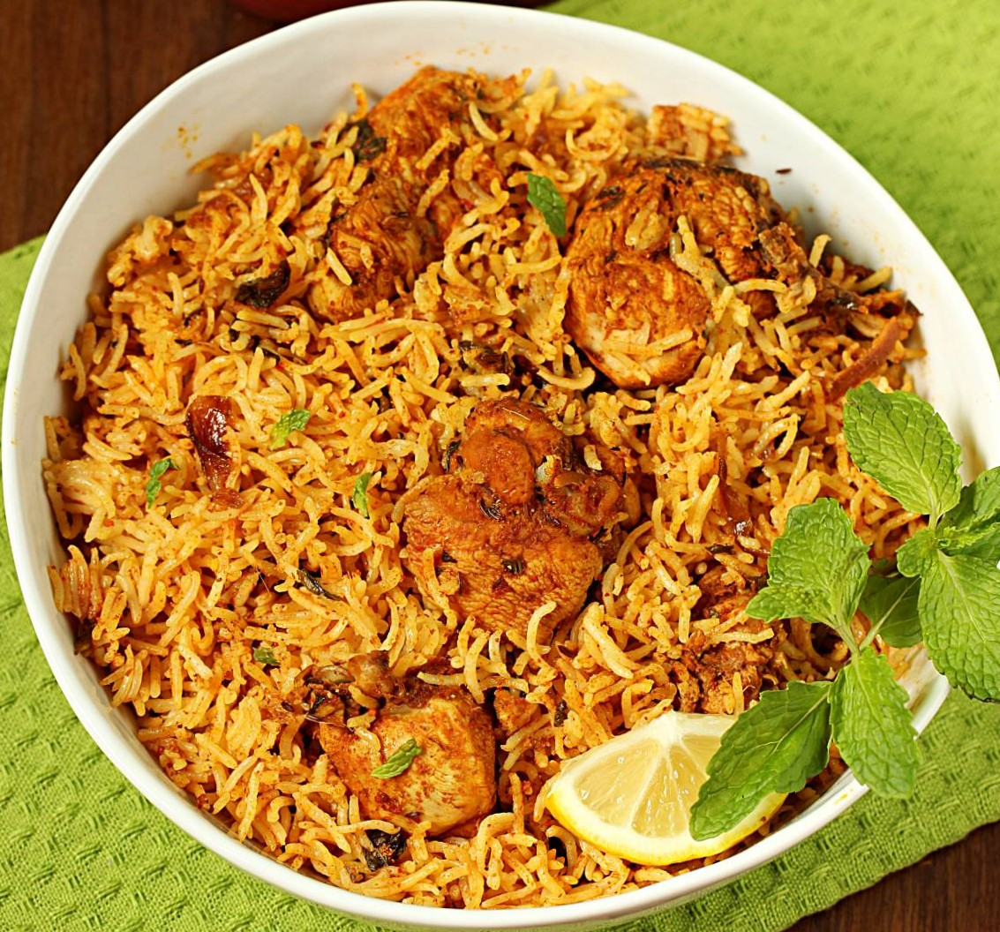

Biryani Recipe

Image Source:
https://www.indianhealthyrecipes.com/wp-content/uploads/2021/12/chicken-biryani.jpg
Description
A traditional South Asian rice dish. A dish that is usually served with a type
of protein, some eggs and potatoes. While meat-based biryani is popular, vegetarian
options do exists. This particulary recipe uses chicken as the base.
Ingredients
- 1/2 kg chicken
- Seasonings
- 1/2 tablespoon garam masala
- 1/2 teaspoon salt
- 1/4 teaspoon ground turmeric
- 1/2 teaspoon red chili powder
- 1 tablesppon lemon juice
- 1 1/4 tablesppons ginger garlic paste
- Spices
- 2 cups basmati rice
- 1 bay leaf
- 4 green cardamons
- 6 cloves
- 1 inch cinnamon piece
- 1 star anise
- 3/4 teaspoon caraway seeds
- 1 strand mace
- Flavor enhancements
- 1/4 onion (sliced)
- 1/4 cup plain yogurt
- 1 teaspoon garam masala
- 1 green chili pepper
- 2 tablespoons chopped mint leaves
Steps
- Make slits into chicken and Seasonings
- Mix well set aside for 1 hour
- Rinse rice and let it sit in fresh water for 30 minutes
- Heat Oil in new pot with Spices and onion slices
- Heat and stir until uniformly light brown
- Add chicken to pot for saute for 5 minutes or until pale
- Bring heat to low cook until chicken is soft
- Add Flavor enhancements to pot
- Layer drained rice over chicken and add 3 cups water to pot
- Close lid and cook until rice is done
Recipe Source
https://www.indianhealthyrecipes.com/chicken-biryani-recipe/
Home